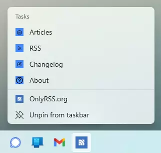
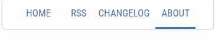
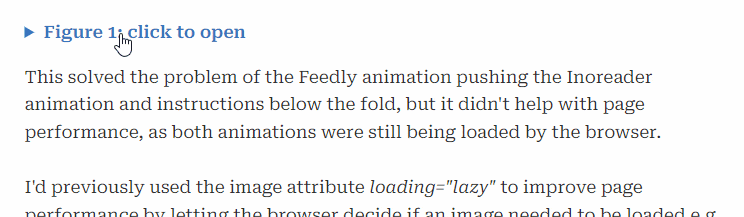

Changelog
A list of all website changes is included below. To see the reason for the change, and what I learnt in the process, please click on the relevant item.
: New article: My first JavaScript “app”
An article describing my first attempt at using JavaScript. An app that randomly selects a number of home-gym circuit training exercises.
: New article: Adding screenshots to your PWA install experience
I recently added app screenshots to my site's manifest file, so that users would be better informed about the app before deciding to install. This post describes how I did it and what I learnt.
: Copied hosting to GitHub Pages
I read a blog post describing how easy it is to host your website on GitHub Pages, so thought I would try it out to see how it worked. Turned out it worked pretty well (well, after I updated a load of paths, turns out I never really understood the differences between, "/", "./" and "../" very well).
I've done a little testing, and it seems that GitHub Pages is consistently faster than my current host. For example, the load time for this Changelog page on GitHub is 32 ms–37 ms, with my current host it's 55 ms–74 ms.
Other differences I've noticed between GitHub Pages compared to my current host; they have a fixed cache max-age = 10 mins, and don't yet support Brotli compression. Also, GitHub Pages is free! I do host a couple of small websites alongside OnlyRSS, so it's not as simple as me moving to GitHub Pages and not having to pay for my current hosting, but I do suspect that GitHub Pages will become the primary host for OnlyRSS, all that remains is for me to point the domain to it.
Here's a link to the GitHub Pages hosted version.
: New article: Automatically numbering figures with CSS Counters
Five days ago I implemented the auto-labelling and numbering for all figures across OnlyRSS.org. This article describes how I did it using just CSS & HTML.
: Fixed link styles in fig captions and lists using the ::where selector
I use a specific style for links used in article bodies, i.e. links are followed by a "°" symbol, which is either red (external links) or blue (internal links). This was working fine in paragraphs, but not in lists or fig captions. This was because I was simply using:
p a {[style]}I wanted to apply the same style to lists and fig captions, but rather than repeating the same CSS for all three, I used—for the fist time—the ::where CSS Selector. So I now have:
::where(p, li, figcaption) a {[style]}I suspect I'll be using this selector a lot going forward.
: Added PWA Shortcut icons
I added the PWA shortcuts (aka jump list) a few days ago, but didn't give each shortcut their own icon. Adding individual icons makes the PWA appear a little more "native", and less like a web page in disguise! I'm not very happy with the current icons I've created, so will probably update them soon.
: Implemented auto label and numbering for all figure captions i.e. Figure 1, 2, 3,…etc.
I read a very useful article over at smashingmagazine.com today titled “Lesser-Known And Underused CSS Features In 2022”, it contained a section on CSS Counters. I learnt that Counters can keep track of the number of specific HTML tags e.g. <figcaption>, and then display the current count in the page. I used this to automatically add “Figure #” before each figure caption. This is useful for those times when I decide to slot a new figure into a page, as I wouldn't then need to renumber all the following figures.
: Fixed the global navigation bar to the top of the page
The introduction of the global navigation bar back in April greatly improved the site navigation, but, users still had to scroll to the top of a page in order to navigate to a new page. Fixing the nav bar to the top of the viewport has removed this pain point (at the expense of a small amount of screen real estate).
: Improved the PWA experience (install & shortcuts)
Updated the app description, and added app screenshots to the manifest.json. When a visitor to OnlyRSS.org is prompted to install the app on Android, they now have the option to view some in-app screenshots prior to performing the install.
After install, if they long-press on the app icon on Android, or right-click on the app icon on the Windows taskbar, they will now see shortcuts for Articles, RSS, Changelog, and About pages.
: Added Alt text to images—even though they already use <figcaption>
Strictly speaking, Alt text for images is not required if you're using the <figcaption> element, as this element will contain a description of the image which will be read out by screen readers. And as all my images have a <figcaption>, I'd not been using Alt text. But, after giving this some thought I'd come to the conclusion that Alt text is required in most cases even when <figcaption> is used.
A typical figure caption for a chart might be 'Figure 1. Chart showing the change in price of oil over time'. But, it's not a complete description of what's happening on the chart, it doesn't need to be, that's the purpose of the chart! The Alt text I've added for my images tries to describe the content of the image in words, rather than a simple statement about what the image is.
: Made all fonts local, and set some fonts to font-display: block
FOUT can be an issue for many websites, but it wasn't a particular problem on OnlyRSS until I added the global nav bar. The size of the 'buttons' on the nav bar are determined by the size of the button names e.g. RSS, About, and Changelog. When the page is first loaded these button names are displayed using the fallback font (while the primary font is loaded), this resulted in a noticeable movement of the nav bar buttons that was very distracting.
This was solved by switching the font used on the nav bar from font-display: swap to font-display: block. The result is that the nav bar font is essentially invisible until the primary font has loaded, this seems to have fixed the issue.
Before I discovered the solution above, I'd also downloaded all the fonts from Google and hosted them locally, although this didn't fix the issue, there are other reasons to do this, but I think that will be the subject of a future article.
: Added the global navigation bar
As the site has grown to include a few pages i.e. RSS, Changelog, About (separate to the articles), the navigation required a bit of an upgrade from the single home-button. This first version is a simple top nav bar, with the home button on the left, and buttons for the dedicated pages on the right. They are separated by a single empty span element that has its flex set to 1, this pushes the various buttons to the far-left and -right.
: Defined two styles for <details> & <summary> HTML elements
The <details> and <summary> HTML elements are what's used to create these Changelog entries, but, I've also started to use them in articles to hide images until requested by the reader.
On article pages, I used the pseudo-element ::after to append the content "close" or "open" to the <summary> text. I used details[open] summary::after{ } to target the summary element only when the detail element was open, the result was an open/close toggle built with just HTML & CSS.
: New article: Loading images only when (or if) they are needed
This article describes how I used the <details> and <summary> HTML elements in combination with the lazyloading image attribute to hide and delay the loading of images until they are requested by users. I did this to make the default load state of the page shorter and more concise, and to improve page load performance.
: Created the Subscribe to OnlyRSS page
The RSS link on the homepage used to open the RSS feed, for users unfamiliar with RSS this might have been confusing. The link now opens a 'subscribe' page which includes the RSS feed URL and instructions on how to subscribe via Feedly and Inoreader.
I created 2 animated GIFs (each ≈300kB) showing the subscription process in Feedly and Inoreader, but I didn't want these to have a negative effect on the page load performance (the GIFs are not essential for the page), so I hid them in the <detail> element and set the image attribute 'loading="lazy"' (usually used to delay the loading of images that are below the fold), to my surprise this worked, and the images only load when the user interacts with the <detail> element.
: Changed the link style for text
This is a bit controversial. Hyperlinks are meant to be blue and underlined. Many websites obviously don't follow this guideline, and instead use a colour, or an underline, but they're typically using one or the other. If an article contains many links, I find the existing options a bit distracting (see any page on Wikipedia as an example), especially if I'm not actually going to click on any of the links. So, I've adopted the link style used by Matthew Butterick in his online book Butterick's Practical Typography (he uses it for external links only, I'm using it for internal and external links.) I've used a red circle for external links, and blue for internal. On-hover, the linked text will also change to the appropriate colour.
: Should your <header> be in your <article>, or above your <article>?
This isn't a rhetorical question. There doesn't appear to be an agreed answer online for this. Today I moved all the article <header> elements and placed them within the <article> elements. Previously they had been above.
The HTML Article element represents a self-contained composition in a document, page, application, or site, which is intended to be independently distributable or reusable e.g., a forum post, a magazine or newspaper article
The HTML Header element represents introductory content, typically a group of introductory or navigational aids. It may contain some heading elements but also a logo, a search form, an author name, and other elements.
I've decided that if the Header is meant to contain introductory content, and often the h1, then it's essential for the article to which it belongs, and as the <article> content is meant to be self-contained (i.e. suitable for redistribution) then (at least for my use case) the <header> should be in the <article>.
Previously the page outline (the visual outline I mean i.e. the border and drop-shadow) was represented by a <main> with a specific CSS Class applied. This has now been replaced by <article>, i.e. I've got rid of another CSS Class and replaced it with a semantic HTML element, which is a positive as far as I'm concerned.
: Swapped a <div> and CSS Class for the <aside> element
I've tried my best to avoid non-semantic HTML elements where possible i.e. <div> and <span>. The homepage uses a few <div> elements (to create the cards), and this page uses <span> (for the tags), apart from that the whole site uses semantic HTML tags. I've avoided the use of CSS IDs altogether, and have only defined a few CSS Classes.
I was using a few <div> elements for the related articles that appear at the bottom of a couple of
articles, but there is a specific HTML element designed to show related content i.e. the <aside> element.
Here's the description of the aside element from W3C Schools, The aside element represents a section of a
page that consists of content that is tangentially related to the content around the aside element.
: Added SVG social icons to the About page
This was a bit of a rabbit-hole for me. I downloaded a few social media icons from the web in SVG format, and created some of my own in Figma. I then had to work out the correct Viewbox size etc. I wanted the icons to appear outlined with a white fill, but then have the fill fade to their brand colours on-hover. This took a bit of CSS work to get right. Basically, the SVG is inline with the HTML and includes the fill colour. The CSS then overrides this and sets the fill to transparent. On-hover the transparency is then removed (via a 0.9s transition) to reveal the fill colour. Doing it this way means that the CSS is generic and works for all the icons—it removes the need for a CSS Class or ID per icon.
The SVG icons and the required CSS take up 12kB of space, which when compressed for transfer to the browser comes to around 2kB. Not bad (IMHO) for 8 coloured icons that can be scaled to any size. If these 8 icons were PNGs or GIFs they would each have to be loaded after the HTML and CSS. The inline SVG solution means they are loaded with/in the HTML.
In case it's not obvious from the description above…yes, I am quite proud of myself. 😀
: Right-aligned the tags in the Changelog
This actually took me a little while to figure out. Had to wrap the date/description in a <span>, (the tags already use <span>) then I set the first span in the Changelog summary to flex:1, I did this using the first-of-type CSS selector i.e. 'summary span:first-of-type {flex: 1}'. The other <spans> (used by the tags) would default to flex:0. The result of which is that the date/description expands to fill the row and pushes the tags to the far right.
: Moved the links to the Latin fonts into the HTML head
Previously, I'd moved the Google font code i.e. @import (which itself linked to a stylesheet) from the CSS and into the head of the HTML, therefore removing a “chain” when loading the page. This time I moved the links to the Latin version of the fonts directly into the HTML head. It removes another “chain”, and page load speed for most pages is now around 30-50 ms. Without actually minifying the CSS and moving it into the HTML head, there's not much else I can do now to improve page performance.
: Created this Changelog page
One of the reasons for creating this website is to learn HTML and CSS, so I thought it might make sense to list the changes and explain what I've learnt along the way. This changelog makes use of the <details> and <summary> HTML tags (combined with a little CSS, you end up with these little 'expandable' sections, no JS required.)
: Replaced the About page
The original About page used a 2-column layout that didn't work well on mobile, for the sake of simplicity I decided to use the standard article page style/CSS.
: Switched GitHub repository from Private to Public, added link to nav
I don't think anyone is going to be cloning my repository anytime soon, but having it public just makes things a little simpler, and allows me to see better analytics related to my own commits.
: Moved font import from CSS to the <head> of each page
This took a bit of research. When looking at the load order of page elements, I noticed that most of the page was waiting for the fonts to load, and this was not starting until after the CSS had loaded. By moving the font import into the HTML, the font load can start in parallel with the CSS, resulting in a faster page load.
: Improved the PWA user experience
Created new PWA icons, added the required apple-touch-icons, added a maskable icon, changed the display type in the manifest from minimal-ui to standalone, and added a theme-color in the HTML <head>.
These changes greatly improve the PWA user experience, especially on iOS devices. OnlyRSS.org now gets a 100% PWA score via the open-source Lighthouse tool.
: Removed Google Analytics
OK, this one needs some explaining, especially as one of my stated aims for building OnlyRSS is as a learning experience.
Analytics are great for measuring success (especially if success is defined by the number of page views), or for trying to write “better” content (by measuring the popularity of existing content, and creating more of the same). But, my aim is not to write articles that will result in a large number of page views, or to create a blog that will become popular. My sole aim is to learn HTML and CSS, and maybe create articles that at least one other person on the internet will find useful. The analytics were interesting, but they weren't free, and the cost was actually quite high, and it was not being paid by me, it was being paid by the site's visitors. The cost was a reduction in user experience.
Basically, the page load times were dominated by the JS required for the analytics. Removing the analytics resulted in far better performance, i.e. much faster load times. So I made the decision to remove the analytics and give visitors a better experience.
: Added loading="lazy" to images
This required some research, mostly to determine which images would benefit and which would not. Essentially this image attribute won't load an image until the browser thinks that the user is actually going to view it, i.e. it looks at a user's scrolling behaviour, and loads the image just before the user gets to the specific section of the page. Although all images on my site are optimised to be as small as possible, there's still no need to load an image at the bottom of the page if the user is never going to see it.
: Added OpenGraph meta tags to most pages
This required a lot of research and some testing to get it right (tip: .webp images are NOT supported!), enough that I'll probably create a post about this topic. Basically, if I add an article link to Twitter, LinkedIn or Facebook, they will contain a specific title, description and image and will typically be displayed in some form of card design.
: My first use of the <abbr> HTML tag
There are many HTML tags that are underused (IMHO), and <abbr> is probably one of them. It allows you to show the full text on hover for an abbreviation, e.g., IMHO.
I made a few tweaks to the CSS, so on hover the cursor changes to the help-pointer, and on mobile you can tap the abbreviation, and it is then shown in-line in full after the abbreviation.
: New article: Linking tables to stacked bar charts
While building Cirium Profiles, we came up with a neat solution to help mitigate one of the issues with stacked bar charts. This article describes what we did, and why.
: Added 'related articles' to the bottom of some articles
My articles cover various subjects, some of which could be placed into groups, so I defined a style (not finished) for the display of 'related articles' which will appear at the end of some articles.
: Added <figure> and <figcaption> to articles and changed accent colour
Placed all article images into the HTML figure tag. Removed the 'alt' attribute from images, as this was no longer required—assuming the <figcaption> includes a full description of the image.
Also changed the accent colour of the site from red to blue, because everybody knows that blue is the best colour.
: Converted the majority of images to the .webp format
Did some research regarding browser support and the modern image format of .webp. Decided to replace all images that would benefit from it to the new format in order to improve page load performance.
: Made the site responsive—finally looks good on mobile
Prior to this the mobile version of the site was terrible, it so bad that mobile browsers kept requesting users to use their 'reader' view. This required me to learn how to use Media Queries and to add the viewport tag into the HTML head.
: Project Unity. One style to rule them all
This was a big change for the site, removing all individual styles (one per article) and settling on a single style. Prior to this each article had its own style—this was on purpose, as it gave me the reason I needed to practice CSS. It also allowed me to put into practice what I learnt from reading 3 typography books over the previous couple of weeks.
: OnlyRSS.org, now a Progressive Web App (PWA)
A PWA version of OnlyRSS.org is not really needed by anyone. This was more a case of "can it be done?". I'm also considering turning one of my web products into a PWA for my users, so this was an interesting learning experience for me.
: New article: Drop caps and indents
Got interested in how paragraphs are separated (in print and on the web), worked out how it's quite easy to implement in CSS with some specific CSS selectors, so decided to share what I had learned.
: New article: Why I prefer the Kindle over physical books
This was my first attempt at using CSS for something other than basic page typography, and it was a difficult learning experience—and it still doesn't work correctly on Safari!
: New RSS article: Top Tens of 2021
This was an RSS only article, so no article page on the site. Since graduating (25 years ago) my MSc friends and I share our 'top tens' at the end of each year. This year I thought I'd share it with my (very small quantity of) RSS subscribers.
: New article: Why every Product Manager should build a website
A short article describing why I believe every Product Manager should build a website. This was the first article where I used the <blockquote> HTML tag.
: New article: My indoor rowing tips after 15 million meters
An article describing my experience and tips after rowing 15 million meters over 8 years. For some odd reason this ended up in hacker news, which resulted in this article getting over 1,300 pageviews in a week!
: Updated the homepage from a list-view to a card-view
Not a big need for this change, other than the fact that I wanted to see how easy it would be to makes "cards" in CSS, and also, cards are obviously the cool thing these days. I had to get my head around CSS Flexbox.
: New article: Chart Picker
All the details of the Chart Picker I built using Excalidraw, which can be found on GitHub. Investigated and used a few 3rd party tools to compress .svg files.
: Updated the meta-row on articles to be left and right aligned
Left aligned the date, right aligned other article details. Had to learn how to use CSS float—and learnt that you have to remember to clear the float!
: Changed the website's folder structure
Originally all the files for an article were in a specific article folder. I changed this so there's now separate folders for posts, images, styles, etc.
: New article: RSS part 1: what is RSS and what are aggregators
An article explaining what RSS is and how it can be useful. I learnt how to use the <code> HTML element.
: New article: Drawing with Excalidraw
An article describing Excalidraw and why it's a great tool for prototyping.
: New article: Working from home hardware
An article describing my work-from-home hardware setup, and why I believe the hardware is worth investing in.
: New article: Anatomy of a lockdown weekday
A description of the routine I fell into while working from home during the COVID-19 pandemic.
: New article: Using virtual desktops in Windows 10
My post describing how to take advantage of Windows Virtual Desktops when shifting between tasks.